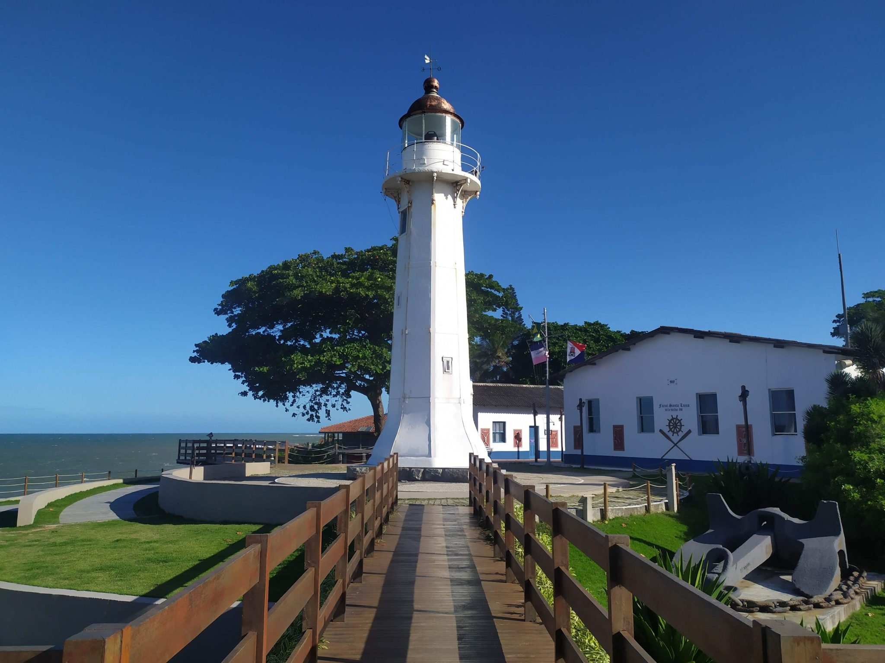

Vila Velha é uma cidade do Espírito Santo, fundada em 1535 e uma das mais antigas do Brasil. É conhecida por suas belas praias e pelo Convento da Penha, um de seus principais pontos turísticos. A cidade também se destaca pelo comércio, turismo, indústria e serviços.

Vila Velha possui uma grande diversidade de pontos turísticos, com destaque ao Convento da penha, Morro do Moreno e o Farol de Santa Luzia.

Para conhecer mais a cidade de Vila Velha, Clique aqui.
para baixar o arquivo em formato de DOCX.Para conhecer mais a cidade de Vila Velha, Clique aqui.
para baixar o arquivo em formato de PDF.Para conhecer mais a cidade de Vila Velha, Clique aqui.
para baixar o arquivo em formato de Zip.